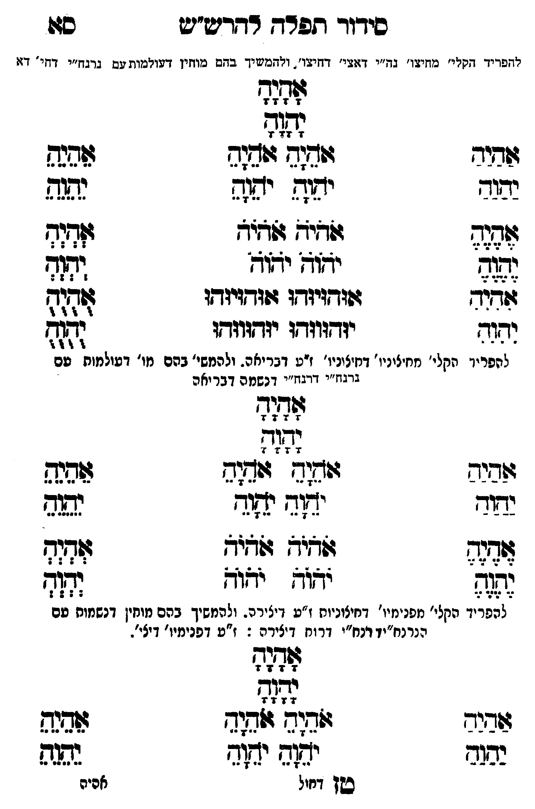

Neue Klartextfassung
[להפריד הקלי' מחיצו' נה"י דאצי' דחיצו', ולהמשיך בהם מוחין דעולמות עם נרנח"י דחי' דא] אָהָיָהָ יָהָוָהָ === טבלה === [טור ימין] אַהַיַהַ יַהַוַהַ אֶהֶיֶהֶ יֶהֶוֶהֶ [טור אמצעי] אֹהֵיָהֵ אֹהֵיָהֵ יֹהֵוָהֵ יֹהֵוָהֵ אֹהֹיֹהֹ אֹהֹיֹהֹ יֹהֹוֹהֹ יֹהֹוֹהֹ [טור שמאל] אֵהֵיֵהֵ יֵהֵוֵהֵ אְהְיְהְ יְהְוְהְ === סוף טבלה === === טבלה === [טור ימין] אִהִיִהִ יִהִוִהִ [טור אמצעי] אוּהוּיוּהוּ אוּהוּיוּהוּ יוּהוּווּהוּ יוּהוּווּהוּ [טור שמאל] אֻהֻיֻהֻ יֻהֻוֻהֻ === סוף טבלה === [להפריד הקלי' מחיצוני' דחיצוני' ז"ע דבריאה. ולהמשי' בהם מו' דעולמות עם נרנח"י דרנח"י דנשמה דבריאה] אָהָיָהָ יָהָוָהָ === טבלה === [טור ימין] אַהַיַהַ יַהַוַהַ אֶהֶיֶהֶ יֶהֶוֶהֶ [טור אמצעי] אֹהֵיָהֵ אֹהֵיָהֵ יֹהֵוָהֵ יֹהֵוָהֵ אֹהֹיֹהֹ אֹהֹיֹהֹ יֹהֹוֹהֹ יֹהֹוֹהֹ [טור שמאל] אֵהֵיֵהֵ יֵהֵוֵהֵ אְהְיְהְ יְהְוְהְ === סוף טבלה === [להפריד הקלי' מפנימיו' דחיצוניות ז"ע דיצירה. ולהמשיך בהם מוחין דנשמות עם נרנח"י דרנח"י דרוח דיצירה: ז"ע דפנימיו' דאצי'.] אָהָיָהָ יָהָוָהָ === טבלה === [טור ימין] אַהַיַהַ יַהַוַהַ [טור אמצעי] אֹהֵיָהֵ אֹהֵיָהֵ יֹהֵוָהֵ יֹהֵוָהֵ [טור שמאל] אֵהֵיֵהֵ יֵהֵוֵהֵ === סוף טבלה ===
Original gegen neue OCR · Niqqud für Vergleich ausgeblendet
Original
[להפרידK126-001 הקלי' מחיצו' נה"י דאצי' דחיצו', ולהמשיך בהם מוחין דעולמות עם נרנח"י דחי' דא] אהיה יהוה === טבלה === [טור ימין] אהיה יהוה אהיה יהוה [טור אמצעי] אהיה אהיה יהוה יהוה אהיה אהיה יהוה יהוה [טור שמאל] אהיה יהוה אהיה יהוה === סוף טבלה === === טבלה === [טור ימין] אהיה יהוה [טור אמצעי] אוהויוהו אוהויוהו יוהוווהו יוהוווהו [טור שמאל] אהיה יהוה === סוף טבלה === [להפריד הקלי' מחיצוני' דחיצוני'K126-002 ז"ע דבריאה. ולהמשי' בהם מו' דעולמות עם נרנח"י דרנח"יK126-003 דנשמה דבריאה] אהיה יהוה === טבלה === [טור ימין] אהיה יהוה אהיה יהוה [טור אמצעי] אהיה אהיה יהוה יהוה אהיה אהיה יהוה יהוה [טור שמאל] אהיה יהוה אהיה יהוה === סוף טבלה === [להפרידK126-004 הקלי' מפנימיו' דחיצוניות ז"ע דיצירה. ולהמשיך בהם מוחין דנשמות עם נרנח"י דרנח"יK126-005 דרוח דיצירה:K126-006 ז"ע דפנימיו' דאצי'.] אהיה יהוה === טבלה === [טור ימין] אהיה יהוה [טור אמצעי] אהיה אהיה יהוה יהוה [טור שמאל] אהיה יהוה === סוף טבלה ===K126-007
OCR · fehlbar
סידוך תפדד דדדיש"יש סצו חחפדיד דפרי' מחיעו' בח"י ד:גשי' וויגי. מזי בדש כמוזזין דשורמות עס גדבז"י דחזי' דזו גז((זד נג(ד ששיר וזח(ח וו(ג לדנש נהגד יהוש יה(ה נש( גזז: ולאי: [(שצצ זזזוד א ידזדן ידוח ומגג (גזבוד זזודויזדו זזזדויזדו זך והוד יזדווודו יזדווזדו 8 להפריךץK126-001 הקלי' חחיציניו' דחיציניו'K126-002 ז"ע דבריאה. ולהמשי' בהם מו' דעולמות עם גרבז"י דרגוז"יK126-003 דנשמה דבר יאה לשלל לל וזוביפ זזחוג ג(חצב לזגקש נשוד יתץ י[[וד נ(תנד זב וזג ולבל זמפ לפןק ושוד. נדו דזד לפניוK126-004 הקלי' מפנימיו' דחיצוניות ז"ע דיצירה. ולהמשיך בהם מוחין זזזזו[זל(ז הנרנח"יד דנח"יK126-005 דרוח דיצירה :K126-006 ז"ע דפנימיו' דיצי"- לא[ לל ש(בנב שדוד זד שנג בשגב יג(ש ישץד נגה בשן דחול אכיהK126-007